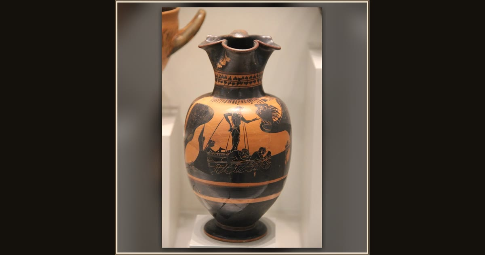

Trefoil Oinochoe with Odysseus and the Sirens
Unknown Attic black-figure vase painter · ca. 525–500 BC · Antikensammlung, Berlin · Berlin, Germany
Painted on a small wine jug when Athens was young, Odysseus rows past the Sirens tied fast to his mast while one of the bird-women swoops overhead. Explore its place in Book XII of the Odyssey.